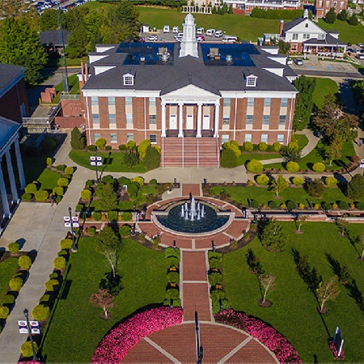

OSU Cascades
OSU Cascades is a branch of Oregon State University located in Bend. They work with the faculty at COCC to ensure a smooth transfer from one school to the next. In addition, with the resources available at OSU Cascades, it will be easy to transfer to OSU in the future, or just stay in Bend
Here are further details surrounding the specigic degree: https://osucascades.edu/academics/computer-science

University of Oregon
One of the best ranked public schools in Oregon, in the vibrant town of Eugene. While it will take more effort to transfer here for a four year degree path then it will to go to OSU, it is still an important consideration.
Here are further details surrounding the specigic degree: https://cs.uoregon.edu/undergraduate/cis-major
